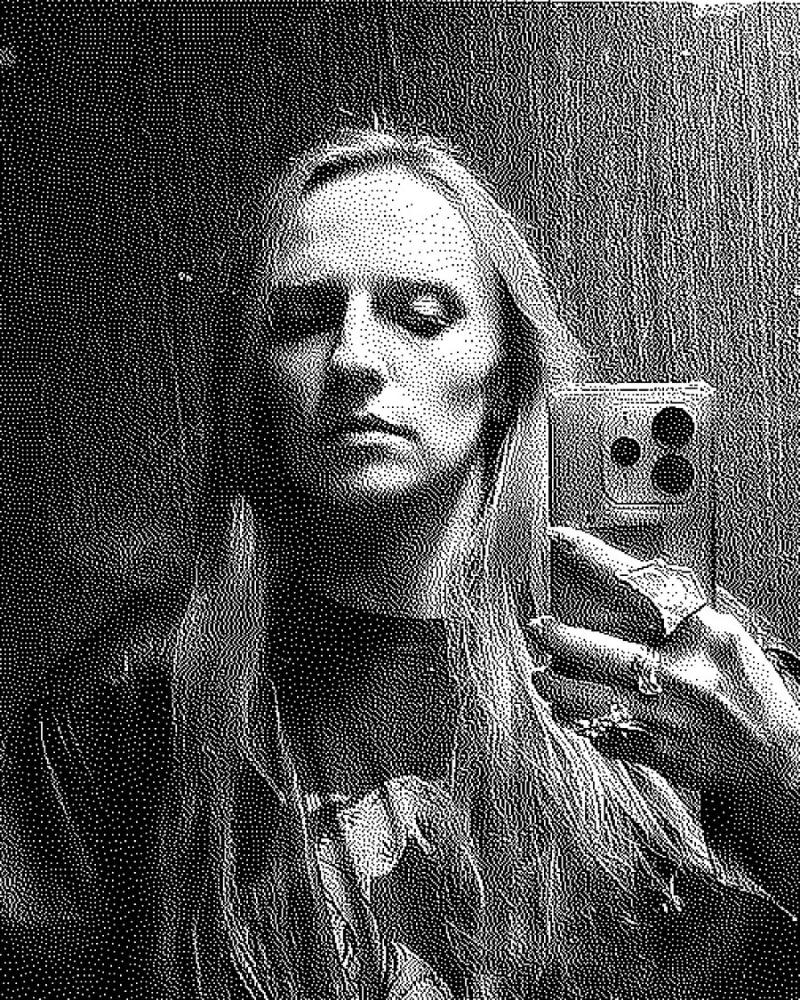

Марго РезнікMargo Rieznik
Київ, УкраїнаKyiv, Ukraine
Мультидисциплінарна мисткиня. Працює з відео, перформансом, анімацією, звуком, живописом. Народилася в місті Боярка Київської області, до повномасштабного вторгнення жила і працювала в Києві. Вчилася в Київському національному університеті будівництва та архітектури. З 2018 року почала займатися сучасним мистецтвом, брала участь у багатьох групових виставках в Києві та інших містах України та за кордоном. Після початку повномасштабного вторгнення прожила в різних містах Польщі трошки більше року, спочатку як тимчасово переміщена особа, потім як художниця в резиденціях. Зараз повернулася в Україну і продовжує працювати тут.
Multidisciplinary artist. Works with video, performance, animation, sound, painting. Born in the city of Boyarka, Kyiv region, before the full-scale invasion lived and worked in Kyiv. Studied at the Kyiv National University of Civil Engineering and Architecture. Since 2018 has been engaged in contemporary art, participated in many group exhibitions in Kyiv and other cities of Ukraine and abroad. After the start of the full-scale invasion lived in various cities of Poland for a little over a year, first as a temporarily displaced person, then as an artist in residence. Now returned to Ukraine and continues to work here.